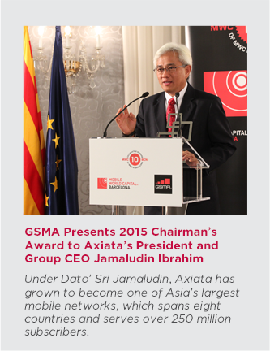

Back
Explore
Chairman's
Statement
Dear Shareholders,
Our journey towards realising our ambition to be a regional champion by 2015 is fast-approaching its mark. I am pleased to report that Axiata has upheld its promise – raising the performance bar whilst remaining committed in its transformation into a new generation telecommunications company by 2020.
Since demerger, we grew our subscriber base by more than 6x to serve over 260 million people in eight countries and our market capitalisation has increased more than four times to RM58.9 billion. Axiata’s share price performance continued to remain resilient, closing at RM7.05 at the end of 2014. Axiata is today one of the largest and respected Asian telecommunications companies.
These achievements are only the beginning of our journey. We are making bold moves and embracing new business models towards achieving Mobile Data Leadership, paving the way to become a truly Digital Company. More specifically, we have put in place a new growth strategy; driving continuous improvements to our businesses and operating models, and built new and stronger management teams, in our bid to become a ‘New Generation Telco’ by 2020. This is in the face of the rapidly evolving mobile industry as well as increased competition from existing players as well as OTT players invading our space emerging as a substitution to our services.
Our sustained underlying performance and strong cash position has allowed the Group to provide healthy returns to shareholders through a total dividend payout of 22 sen per share for the financial year ended 2014. The Group will continue to maintain a healthy dividend payout subject to overall financial performance, capital requirements, growth expansion strategies as well as dividends received from subsidiaries.
Commitment To Sustainable Long Term Value Creation
As we steer forward and strive to push our business to further excellence, Axiata remains committed to bring value and [positive] contribution to societies that we operate in, as one of the top contributors to the countries’ economies.
In the last six years, to support our business activities, we have spent more than RMxx billion in terms of CAPEX and created more than [one million jobs] throughout the ecosystem. This has translated into an estimated RMx billion (USDx billion) in direct and indirect economic contribution.
Beyond our business activities, we continue to make an impact to the societies and environment in which we operate especially, but not limited to, education, leadership development and digital inclusion. In 2014, we further enhanced our commitment in the areas of disaster preparedness. Axiata was one of three founder signatories of the GSM Association Mobile Industry Humanitarian Connectivity Charter that was signed in Barcelona in March 2015.
We remain focussed on adhering to the highest standards of corporate governance, transparency and sustainability reporting. Axiata’s recognition at the Malaysia-ASEAN Corporate Governance Index 2013 awards for Top 5 overall Corporate Governance for the second year in a row is testament to this. I am also proud to announce that Axiata has been recognised within a year of publishing our first GRI G4 sustainability report bagging two awards in recognition for our commitment.
Continued Recognition Of Management Excellence
Alongside these awards I am happy to note that that Axiata’s outstanding leadership continues to receive local and international recognition. It gives me great pleasure to have this opportunity to congratulate Dato’ Sri Jamaludin, President and Group CEO who was honoured with two very distinguished awards in 2014 for CEO of the Year at the MSWG-Asean Corporate Governance Transparency Index awards and Malaysia’s Outstanding CEO 2014, at the Edge Billion Ringgit Club. Most recently in March this year, Dato’ Sri Jamaludin was also the recipient of the 2015 GSM Association Chairman award. This award, established in 1996, and part of the annual Global Mobile Awards, is the GSMA’s most prestigious award which recognises outstanding personal contribution to the growth and development of mobile communications around the world.
The awards are an acknowledgement of his leadership and valuable contribution in shaping Axiata into one of Asia’s most successful mobile networks, creating value to the mobile industry across the region, whilst remaining unwavering in his commitment to strong corporate governance and transparency.
This year I am very pleased to welcome back Mr (Dr.) Muhammad Chatib Basri to the Axiata Board of Directors line-up. Having served as the Chairman of the Investment Coordination Board as well as Minister of Finance of Indonesia Mr Basri brings with him a wealth of experience and knowledge of Indonesia, one of our biggest markets in the region. In addition, he brings invaluable expertise in international trade and macroeconomics which extends beyond Asia, an important addition to Axiata as we move towards our goal of becoming a regional champion.
Acknowledgement
On behalf of the Board, I would like to thank our various stakeholders for the support you have given during the year. As always, special mention goes to the governments and regulators of the operating companies’ (OpCos) countries for their facilitation and co-operation. The Board also wishes to thank every employee and the management teams across the Group, our shareholders who continue to believe in our strategy of disciplined growth to strengthen the foundation for the future and our over 260 million customers across the region.
It thus gives me great pleasure to present to you the Axiata Annual Report 2014.
TAN SRI DATO’ AZMAN HJ. MOKHTAR
Chairman
Since demerger, we grew our subscriber base by more than 6x to serve over 260 million people in eight countries and our market capitalisation has increased more than four times to RM58.9 billion. Axiata’s share price performance continued to remain resilient, closing at RM7.05 at the end of 2014. Axiata is today one of the largest and respected Asian telecommunications companies.
These achievements are only the beginning of our journey. We are making bold moves and embracing new business models towards achieving Mobile Data Leadership, paving the way to become a truly Digital Company. More specifically, we have put in place a new growth strategy; driving continuous improvements to our businesses and operating models, and built new and stronger management teams, in our bid to become a ‘New Generation Telco’ by 2020. This is in the face of the rapidly evolving mobile industry as well as increased competition from existing players as well as OTT players invading our space emerging as a substitution to our services.
Our sustained underlying performance and strong cash position has allowed the Group to provide healthy returns to shareholders through a total dividend payout of 22 sen per share for the financial year ended 2014. The Group will continue to maintain a healthy dividend payout subject to overall financial performance, capital requirements, growth expansion strategies as well as dividends received from subsidiaries.
Commitment To Sustainable Long Term Value Creation
As we steer forward and strive to push our business to further excellence, Axiata remains committed to bring value and [positive] contribution to societies that we operate in, as one of the top contributors to the countries’ economies.
In the last six years, to support our business activities, we have spent more than RMxx billion in terms of CAPEX and created more than [one million jobs] throughout the ecosystem. This has translated into an estimated RMx billion (USDx billion) in direct and indirect economic contribution.
Beyond our business activities, we continue to make an impact to the societies and environment in which we operate especially, but not limited to, education, leadership development and digital inclusion. In 2014, we further enhanced our commitment in the areas of disaster preparedness. Axiata was one of three founder signatories of the GSM Association Mobile Industry Humanitarian Connectivity Charter that was signed in Barcelona in March 2015.
We remain focussed on adhering to the highest standards of corporate governance, transparency and sustainability reporting. Axiata’s recognition at the Malaysia-ASEAN Corporate Governance Index 2013 awards for Top 5 overall Corporate Governance for the second year in a row is testament to this. I am also proud to announce that Axiata has been recognised within a year of publishing our first GRI G4 sustainability report bagging two awards in recognition for our commitment.
Continued Recognition Of Management Excellence
Alongside these awards I am happy to note that that Axiata’s outstanding leadership continues to receive local and international recognition. It gives me great pleasure to have this opportunity to congratulate Dato’ Sri Jamaludin, President and Group CEO who was honoured with two very distinguished awards in 2014 for CEO of the Year at the MSWG-Asean Corporate Governance Transparency Index awards and Malaysia’s Outstanding CEO 2014, at the Edge Billion Ringgit Club. Most recently in March this year, Dato’ Sri Jamaludin was also the recipient of the 2015 GSM Association Chairman award. This award, established in 1996, and part of the annual Global Mobile Awards, is the GSMA’s most prestigious award which recognises outstanding personal contribution to the growth and development of mobile communications around the world.
The awards are an acknowledgement of his leadership and valuable contribution in shaping Axiata into one of Asia’s most successful mobile networks, creating value to the mobile industry across the region, whilst remaining unwavering in his commitment to strong corporate governance and transparency.
This year I am very pleased to welcome back Mr (Dr.) Muhammad Chatib Basri to the Axiata Board of Directors line-up. Having served as the Chairman of the Investment Coordination Board as well as Minister of Finance of Indonesia Mr Basri brings with him a wealth of experience and knowledge of Indonesia, one of our biggest markets in the region. In addition, he brings invaluable expertise in international trade and macroeconomics which extends beyond Asia, an important addition to Axiata as we move towards our goal of becoming a regional champion.
Acknowledgement
On behalf of the Board, I would like to thank our various stakeholders for the support you have given during the year. As always, special mention goes to the governments and regulators of the operating companies’ (OpCos) countries for their facilitation and co-operation. The Board also wishes to thank every employee and the management teams across the Group, our shareholders who continue to believe in our strategy of disciplined growth to strengthen the foundation for the future and our over 260 million customers across the region.
It thus gives me great pleasure to present to you the Axiata Annual Report 2014.
TAN SRI DATO’ AZMAN HJ. MOKHTAR
Chairman
President and GCEO’s
Business Review
The Group recorded stable revenue growth of 1.9%, 4.4% at constant currency, to RM18.7 billion. Stellar growth was posted by Smart, XL and Idea, up by 36%, 10% and 19% respectively.
Data continued to be the main growth driver, up
31.5%
In 2014, underlying revenue growth, based on constant currency, remained robust and almost all of our operating companies (OpCos) performed much better than the industry. The Group continued to make progress in delivering our long-term strategy of building firm foundations for the future with substantial investments in new technology and capacity to accommodate the rapid demand for data. We have also accelerated our execution of new businesses with edotco, now one of the largest tower companies in the region, and digital services, our small but fastest growing segment. Axiata ended the year with healthy profit of RM2.3 billion and a very strong balance sheet which allowed us to increase dividend payout without affecting our ability to support future growth. We are confident that with the foundations in place, we will make our vision a reality whilst striving towards our 2020 target to be a new generation telco.
Transforming Our Core Business
The Group saw a mixed year with stellar results from most operating companies, especially Dialog, Robi and Smart, but Celcom’s previous exemplary track record was marred by its 2014 performance. Our affiliate, Idea, also performed extremely well.
The Group recorded stable revenue growth of 1.9%, 4.4% at constant currency, to RM18.7 billion. Stellar growth was posted by Smart, XL and Idea, up by 36%, 10% and 19% respectively.
Data continued to be the main growth driver, up 31.5%. Data revenue showed strong growth in all markets driven by increased smartphone penetration. Axiata is strengthening its core businesses further whilst making progress with strategic initiatives in the digital space and the tower business (edotco).
The Group’s EBITDA dipped by 3.7% to RM7.0 billion. PATAMI in the year was RM2.3 billion, down by 7.9% affected by Celcom’s performance, Axis acquisition costs at XL and the weakening Indonesian currency which fell 9% against the Malaysian Ringgit. Forex did have an impact with the US Dollar also rising against the Malaysian Ringgit and most other currencies in our portfolio.
Axiata ended the year in a position of strength with RM5.1 billion in cash and maintained a healthy balance sheet, a significant achievement amidst a volatile economic backdrop. Axiata’s Gross Debt to EBITDA ratio is now at a very healthy 1.99x.
After an unprecedented 31 consecutive quarters of excellent growth, Celcom’s performance was impacted by system related issues, an industry wide termination of some value added offerings as well as changing consumer behaviour with the increase of smartphone adoption.
Celcom’s massive IT transformation exercise, a major undertaking and spanning all touch points from dealers, customer care to retail outlets, now at stabilisation stage, did have an impact on results but is set to ensure better customer experience whilst establishing a platform for growth in the long run. Data continued to show good traction, the fastest growing segment. Despite the overall sluggish market, data grew an impressive 24%, now contributing 22% of total revenue from 17% in 2013, fuelled by mobile internet revenue which was up 50%. Growth in the data segment was achieved on the back of an upsurge in smartphone penetration that climbed 15 percentage points to 47% from 32% a year ago.
Robi, Dialog and Smart performed much better than the industry. Together they now account for 23% of the Group’s revenue and 21% of the Group’s EBITDA compared to 17% and 12% respectively in 2013.
Transforming Our Core Business
The Group saw a mixed year with stellar results from most operating companies, especially Dialog, Robi and Smart, but Celcom’s previous exemplary track record was marred by its 2014 performance. Our affiliate, Idea, also performed extremely well.
The Group recorded stable revenue growth of 1.9%, 4.4% at constant currency, to RM18.7 billion. Stellar growth was posted by Smart, XL and Idea, up by 36%, 10% and 19% respectively.
Data continued to be the main growth driver, up 31.5%. Data revenue showed strong growth in all markets driven by increased smartphone penetration. Axiata is strengthening its core businesses further whilst making progress with strategic initiatives in the digital space and the tower business (edotco).
The Group’s EBITDA dipped by 3.7% to RM7.0 billion. PATAMI in the year was RM2.3 billion, down by 7.9% affected by Celcom’s performance, Axis acquisition costs at XL and the weakening Indonesian currency which fell 9% against the Malaysian Ringgit. Forex did have an impact with the US Dollar also rising against the Malaysian Ringgit and most other currencies in our portfolio.
Axiata ended the year in a position of strength with RM5.1 billion in cash and maintained a healthy balance sheet, a significant achievement amidst a volatile economic backdrop. Axiata’s Gross Debt to EBITDA ratio is now at a very healthy 1.99x.
After an unprecedented 31 consecutive quarters of excellent growth, Celcom’s performance was impacted by system related issues, an industry wide termination of some value added offerings as well as changing consumer behaviour with the increase of smartphone adoption.
Celcom’s massive IT transformation exercise, a major undertaking and spanning all touch points from dealers, customer care to retail outlets, now at stabilisation stage, did have an impact on results but is set to ensure better customer experience whilst establishing a platform for growth in the long run. Data continued to show good traction, the fastest growing segment. Despite the overall sluggish market, data grew an impressive 24%, now contributing 22% of total revenue from 17% in 2013, fuelled by mobile internet revenue which was up 50%. Growth in the data segment was achieved on the back of an upsurge in smartphone penetration that climbed 15 percentage points to 47% from 32% a year ago.
Robi, Dialog and Smart performed much better than the industry. Together they now account for 23% of the Group’s revenue and 21% of the Group’s EBITDA compared to 17% and 12% respectively in 2013.
Dear Shareholders,
In 2014 we continued to reshape the Group to realise our 2015 vision of becoming a regional champion and a leader, meeting our long-term financial and non-financial objectives. To that effect, we have worked hard on the financial results for 2014 whilst also developing new long-term opportunities and initiatives.
Dialog demonstrated strong revenue growth across businesses of mobile, digital pay television and fixed line with revenue up 6%, EBITDA by 5% and PAT an excellent 17%. Similarly, Robi continued its strong growth trajectory across all financial metrics, outperforming the industry. YoY revenue increased by 9% with data revenue growing by more than 120%. In tandem, EBITDA grew by an impressive 18% and margin improved by 2.9 percentage points to 38.3%. PAT was up by 20% despite significant growth in related capex investments. Smart in particular saw an excellent year continuing to post stellar double digit growth across all financial metrics. In a competitive market, revenue increased 36% and EBITDA by 61% whilst PAT more than doubled. Data revenue surged by 135% and now accounts for 22% of total revenue.
Following suit, our regional affiliates also saw a good 2014. Idea reported all round strong performance for the 9 months FY14 with revenue increasing by 19% and M1 at 6.8%. PAT for Idea and M1 was up by 63% and 9.7% respectively.
XL saw a cautious return to form after flat growth in the previous year, posting an increase in gross revenue of 10% to IDR23.6 trillion (RM6.5 billion). This was primarily driven by an increased customer base from the Axis acquisition as well as a surge in Data revenue of 42%. The year saw XL completing the integration with Axis well ahead of schedule and performing better than the industry in terms of overall performance. In line with XL’s strategy of focusing on its core business, the year also saw the completion of sale of 3,500 towers to PT Solusi Tunas Pratama Tbk. (STP). The proceeds of IDR5.6 trillion (RM1.5 billion) will be used to pare down debt and improve capital position following the Axis acquisition.
Following suit, our regional affiliates also saw a good 2014. Idea reported all round strong performance for the 9 months FY14 with revenue increasing by 19% and M1 at 6.8%. PAT for Idea and M1 was up by 63% and 9.7% respectively.
XL saw a cautious return to form after flat growth in the previous year, posting an increase in gross revenue of 10% to IDR23.6 trillion (RM6.5 billion). This was primarily driven by an increased customer base from the Axis acquisition as well as a surge in Data revenue of 42%. The year saw XL completing the integration with Axis well ahead of schedule and performing better than the industry in terms of overall performance. In line with XL’s strategy of focusing on its core business, the year also saw the completion of sale of 3,500 towers to PT Solusi Tunas Pratama Tbk. (STP). The proceeds of IDR5.6 trillion (RM1.5 billion) will be used to pare down debt and improve capital position following the Axis acquisition.
Challenges, Opportunities And Outlook
We continue to face challenges from the market, competition, regulatory and global economic conditions as our core business continues to be impacted. Competition with existing and new over the top (OTT) players continues to emerge as a substitution to voice and SMS.
Axiata has been preparing for this. Our diversified portfolio and strategy of focusing on the emerging and developed markets of Asia has put us in a strategic and strong position for long term growth. The digital data revolution in our markets is now at the inflection point with the eco-system of high speed networks, smartphones, and applications in place. Asian smartphone penetration may rise substantially faster than growth rates for Europe and from a lower base in Axiata’s markets. This bodes well for the Group given our footprint and strategic investments in the past few years.
We continue to face challenges from the market, competition, regulatory and global economic conditions as our core business continues to be impacted. Competition with existing and new over the top (OTT) players continues to emerge as a substitution to voice and SMS.
Axiata has been preparing for this. Our diversified portfolio and strategy of focusing on the emerging and developed markets of Asia has put us in a strategic and strong position for long term growth. The digital data revolution in our markets is now at the inflection point with the eco-system of high speed networks, smartphones, and applications in place. Asian smartphone penetration may rise substantially faster than growth rates for Europe and from a lower base in Axiata’s markets. This bodes well for the Group given our footprint and strategic investments in the past few years.
Expanding Our Core – Building A New Generation Telco
Gearing up new business units
2014 saw the Group shifting up a gear in our transformation strategy towards becoming a new generation telco, offering services beyond just voice and SMS. This was especially so in the in execution of our new businesses, which have all shown excellent traction in the year.
Axiata’s passive infrastructure company, edotco Group, saw significant progress in 2014. It has now grown its tower portfolio to about 13 thousand, as of end 2014, and increased tenancies by x%. In all countries run and managed by edotco, there has been steep improvements in operationally efficiency and CAPEX savings of RMx, on both structures and energy.
Axiata’s digital services unit, ADS, which supports the increasingly digital lifestyle of our consumers, focusing on digital entertainment, digital commerce, digital payment and digital advertising services, continued to see accelerated progress. In 2012 and 2013 we had jumpstarted and laid the business foundations, and in 2014, we brought to market a number of new businesses and have seen early successes. This includes the digital commerce platform, Celcom Planet, a joint venture with SK Planet, a subsidiary of SK Telekom, building on the success of Elevenia, our partnership with SK Planet in Indonesia. Elevenia in Indonesia has since huge success since its launch in March last year, attracting more than 20 million visitors per month. As of January this year, it has more than 18,000 sellers and 2 million product listings.
Gearing up new business units
2014 saw the Group shifting up a gear in our transformation strategy towards becoming a new generation telco, offering services beyond just voice and SMS. This was especially so in the in execution of our new businesses, which have all shown excellent traction in the year.
Axiata’s passive infrastructure company, edotco Group, saw significant progress in 2014. It has now grown its tower portfolio to about 13 thousand, as of end 2014, and increased tenancies by x%. In all countries run and managed by edotco, there has been steep improvements in operationally efficiency and CAPEX savings of RMx, on both structures and energy.
Axiata’s digital services unit, ADS, which supports the increasingly digital lifestyle of our consumers, focusing on digital entertainment, digital commerce, digital payment and digital advertising services, continued to see accelerated progress. In 2012 and 2013 we had jumpstarted and laid the business foundations, and in 2014, we brought to market a number of new businesses and have seen early successes. This includes the digital commerce platform, Celcom Planet, a joint venture with SK Planet, a subsidiary of SK Telekom, building on the success of Elevenia, our partnership with SK Planet in Indonesia. Elevenia in Indonesia has since huge success since its launch in March last year, attracting more than 20 million visitors per month. As of January this year, it has more than 18,000 sellers and 2 million product listings.
Alongside this ADS also made successful inroads into the digital advertising space with the strategic joint venture with Adknowledge, Inc. to form Adknowledge Asia. The business will work with brands, advertising agencies and app developers in Asia Pacific to provide data-driven advertising strategies, tapping into Asia’s lucrative digital advertising as digital ad spending rises and viewership pattern changes. We have already seen success in Indonesia, with our mobile advertising arm in now serving over 350 brands, advertisers and agencies in delivering mobile and digital advertising to subscribers.
Great progress was also made in Digital money with Dialog’s very successful eZcash about to be implemented in Cambodia and Bangladesh. The year also saw the launch of MIFE, our own Application Programme Interface (API) platform, which will enable our OpCos to fully leverage emerging digital opportunities as part of its overall digital strategy. The service will allow for faster engagement and partnerships, opening up a new way of doing business in the digital space.
To further aid the digital ecosystem, we launched the Axiata Digital Innovation Fund (ADIF), a RM100 million venture capital fund in partnership with Malaysia Venture Capital Management Berhad (MAVCAP). The fund is intended to encourage and spur innovation and growth of the Malaysia’s digital ecosystem, helping companies in the digital services space with innovative products and market fit, through our extensive reach and knowledge of the region.
Great progress was also made in Digital money with Dialog’s very successful eZcash about to be implemented in Cambodia and Bangladesh. The year also saw the launch of MIFE, our own Application Programme Interface (API) platform, which will enable our OpCos to fully leverage emerging digital opportunities as part of its overall digital strategy. The service will allow for faster engagement and partnerships, opening up a new way of doing business in the digital space.
To further aid the digital ecosystem, we launched the Axiata Digital Innovation Fund (ADIF), a RM100 million venture capital fund in partnership with Malaysia Venture Capital Management Berhad (MAVCAP). The fund is intended to encourage and spur innovation and growth of the Malaysia’s digital ecosystem, helping companies in the digital services space with innovative products and market fit, through our extensive reach and knowledge of the region.
Further revamping of business processes
The re-organisation of procurement and treasury operations into centralised business operations for the group, continues to progress well. The Axiata Procurement Centre (APC) focusing on optimising our Network and IT expenditure, entered into strategic framework arrangements with our key Network suppliers – Ericsson, Huawei, NEC, SIAE. The Agreements will enable our Operating Companies to realise business efficiencies and competitive advantage through optimising their demand and capitalise on Group-wide pricing. APC consolidated the demand across five countries in the region and negotiated Group pricing arrangements covering all Axiata markets. APC establish a three year target to save USD150m over a three year period and in 2014 delivered savings of USD78m which is half way to the three year target and 52% greater than the 2014 KPI.
Improving cost structure
With RM4 billion spent yearly in network capex and more than RM1.5 billion in network opex yearly, reducing the cost structure of our operations remains a priority
Axiata has improved Capex efficiency by implementing a unified and better pricing mechanism across all Opcos with a new Global Price Book (GPB) in place. The GPB has listed down the standardized pricing across all Opcos for radio access network and MW transmission systems and is expected to improve capex efficiency by x%.
We have also institutionalised an advanced and focused mechanism for the effective deployment and tracking of incremental technology capex/opex for improved productivity. Alongside this efforts to modernize the networks in every Opco especially the migration from legacy technology built for voice, to all internet protocol (IP), continued in phased manner, to ensure more efficiency.
Alongside this, Group-IT completed the IT Architecture and Blueprint initiative, started in 2013, which looks to harmonise technology across the Group, for cost and operational efficiency. The outcome of this project has provided detailed inputs to every OpCo regarding the technology refresh, new capabilities buildup and sun-setting roadmap in order to proactively advance the IT capabilities keeping in view the business requirements of the Group in the next three years EXPECTED SAVINGS?.
The re-organisation of procurement and treasury operations into centralised business operations for the group, continues to progress well. The Axiata Procurement Centre (APC) focusing on optimising our Network and IT expenditure, entered into strategic framework arrangements with our key Network suppliers – Ericsson, Huawei, NEC, SIAE. The Agreements will enable our Operating Companies to realise business efficiencies and competitive advantage through optimising their demand and capitalise on Group-wide pricing. APC consolidated the demand across five countries in the region and negotiated Group pricing arrangements covering all Axiata markets. APC establish a three year target to save USD150m over a three year period and in 2014 delivered savings of USD78m which is half way to the three year target and 52% greater than the 2014 KPI.
Improving cost structure
With RM4 billion spent yearly in network capex and more than RM1.5 billion in network opex yearly, reducing the cost structure of our operations remains a priority
Axiata has improved Capex efficiency by implementing a unified and better pricing mechanism across all Opcos with a new Global Price Book (GPB) in place. The GPB has listed down the standardized pricing across all Opcos for radio access network and MW transmission systems and is expected to improve capex efficiency by x%.
We have also institutionalised an advanced and focused mechanism for the effective deployment and tracking of incremental technology capex/opex for improved productivity. Alongside this efforts to modernize the networks in every Opco especially the migration from legacy technology built for voice, to all internet protocol (IP), continued in phased manner, to ensure more efficiency.
Alongside this, Group-IT completed the IT Architecture and Blueprint initiative, started in 2013, which looks to harmonise technology across the Group, for cost and operational efficiency. The outcome of this project has provided detailed inputs to every OpCo regarding the technology refresh, new capabilities buildup and sun-setting roadmap in order to proactively advance the IT capabilities keeping in view the business requirements of the Group in the next three years EXPECTED SAVINGS?.
Continued Recognition From Peers
Our commitment and performance has led to our group of companies being recognised by peers and watch groups not only in their own countries, but also regionally. I am pleased to note that Axiata and our subsidiaries again dominated the awards ceremony at the Frost & Sullivan Asia Pacific ICT Award 2014. Axiata Group won the Best Telecommunications Group for the sixth consecutive year. This prestigious award is granted to the operator with a presence in at least 4 Asia Pacific markets that has shown exemplary growth and performance in 2013 in Asia Pacific through its investments in the region. Axiata Group also took home three awards in total with XL Axiata Berhad winning the Most Innovative Telecom Service Provider of the Year and Dialog Axiata was voted Best Emerging Market Service Provider of the Year. Axiata also took home two awards at the 2015 Global Mobile Awards, which were presented at the GSMA Mobile World Congress in Barcelona. Dialog won the Mobile Money Award for eZ Cash and the Best Technology Enabler Award for the Mobile Internet Fulfilment Exchange (MIFE) platform, Ideamart.
The awards are an acknowledgement of the continued success of our operating companies not just in the region but internationally, as well as an acknowledgement of the Group’s progress towards its regional ambitions.
Our commitment and performance has led to our group of companies being recognised by peers and watch groups not only in their own countries, but also regionally. I am pleased to note that Axiata and our subsidiaries again dominated the awards ceremony at the Frost & Sullivan Asia Pacific ICT Award 2014. Axiata Group won the Best Telecommunications Group for the sixth consecutive year. This prestigious award is granted to the operator with a presence in at least 4 Asia Pacific markets that has shown exemplary growth and performance in 2013 in Asia Pacific through its investments in the region. Axiata Group also took home three awards in total with XL Axiata Berhad winning the Most Innovative Telecom Service Provider of the Year and Dialog Axiata was voted Best Emerging Market Service Provider of the Year. Axiata also took home two awards at the 2015 Global Mobile Awards, which were presented at the GSMA Mobile World Congress in Barcelona. Dialog won the Mobile Money Award for eZ Cash and the Best Technology Enabler Award for the Mobile Internet Fulfilment Exchange (MIFE) platform, Ideamart.
The awards are an acknowledgement of the continued success of our operating companies not just in the region but internationally, as well as an acknowledgement of the Group’s progress towards its regional ambitions.
A Regional Champion
We are now entering our watershed year of 2015 where we aim to meet our regional aspirations, as a truly Malaysian grown multinational. Axiata is today one of the largest Asian telecommunications companies with presence in eight countries. Since demerger, Axiata has grown our subscriber base by more than 6x to serve over 260 million people, revenue for the Group increased 87% to RM18.7 million, PAT by 80% to RM2.3 billion and market capitalisation has increased more than two times to RM58.9 billion. I am happy to note that not only are we are on track to meet our regional ambitions, we have put in place foundations to meet the challenges and opportunities in the industry today preparing the group for the new digitized world.
Whilst we remain cautious given the challenges and increased competition expected in the industry, we will be aggressively moving into our next phase of becoming a leader in mobile data and positioning for a new business model. We will be investing significantly to transform our core looking at, amongst other things, customer relationships, further digitisation of customer care and pricing innovation. This will be alongside a focus on data profitability as well as looking at new cost structures and capacity utilisation. Whilst this may have an impact on our short term performance it will ensure the Group’s success for the future.
Acknowledgements
On behalf of the management of Axiata Group, I would like to express our thanks to our many stakeholders including investors, partners and media for your continued support, as well as governments and regulators for their co-operation and facilitation in growing our businesses in their respective countries. Our most sincere gratitude to all our colleagues across Asia, who have worked tirelessly to get us to where we are today; and to our Board of Directors for their guidance in setting the strategic direction for the Group. Most of all, we would like to acknowledge our over 260 million customers for their continued support and loyalty.
Dato’ Sri Jamaludin Ibrahim
Managing Director/President
& Group Chief Executive Officer
We are now entering our watershed year of 2015 where we aim to meet our regional aspirations, as a truly Malaysian grown multinational. Axiata is today one of the largest Asian telecommunications companies with presence in eight countries. Since demerger, Axiata has grown our subscriber base by more than 6x to serve over 260 million people, revenue for the Group increased 87% to RM18.7 million, PAT by 80% to RM2.3 billion and market capitalisation has increased more than two times to RM58.9 billion. I am happy to note that not only are we are on track to meet our regional ambitions, we have put in place foundations to meet the challenges and opportunities in the industry today preparing the group for the new digitized world.
Whilst we remain cautious given the challenges and increased competition expected in the industry, we will be aggressively moving into our next phase of becoming a leader in mobile data and positioning for a new business model. We will be investing significantly to transform our core looking at, amongst other things, customer relationships, further digitisation of customer care and pricing innovation. This will be alongside a focus on data profitability as well as looking at new cost structures and capacity utilisation. Whilst this may have an impact on our short term performance it will ensure the Group’s success for the future.
Acknowledgements
On behalf of the management of Axiata Group, I would like to express our thanks to our many stakeholders including investors, partners and media for your continued support, as well as governments and regulators for their co-operation and facilitation in growing our businesses in their respective countries. Our most sincere gratitude to all our colleagues across Asia, who have worked tirelessly to get us to where we are today; and to our Board of Directors for their guidance in setting the strategic direction for the Group. Most of all, we would like to acknowledge our over 260 million customers for their continued support and loyalty.
Dato’ Sri Jamaludin Ibrahim
Managing Director/President
& Group Chief Executive Officer

Strategic Journey Towards
Building a New Generation Telco
Since its demerger with Telekom Malaysia in 2008, Axiata has gone through two distinct phases. In Phase 1, our vision was to build a new distinct company, which set the stage for Phase 2 (2011-2015) where we are now creating a regional champion. As the world of communications evolves, our vision for 2020 is to build a ‘New Generation Telco’ in the Phase 3 of our journey.
Read More
Read More